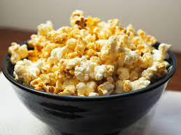

Popcorn

Popcorn Recipe
How to make a perfect batch of popcorn, with no burnt kernels! Easy stove-top popcorn recipe.
- 3 tablespoons coconut oil or extra virgin olive oil
- 1/3 cup high quality popcorn kernels
- 1 tablespoon butter or more to taste, optional
- Salt to taste
- Heat the oil
- Put 3 or 4 popcorn kernels into the oil
- Add the rest of the popcorn
- Cover the pot, remove from heat and count 30 seconds
- Return the pan to the heat
- Once the popping slows to several seconds between pops, remove the pan from the heat